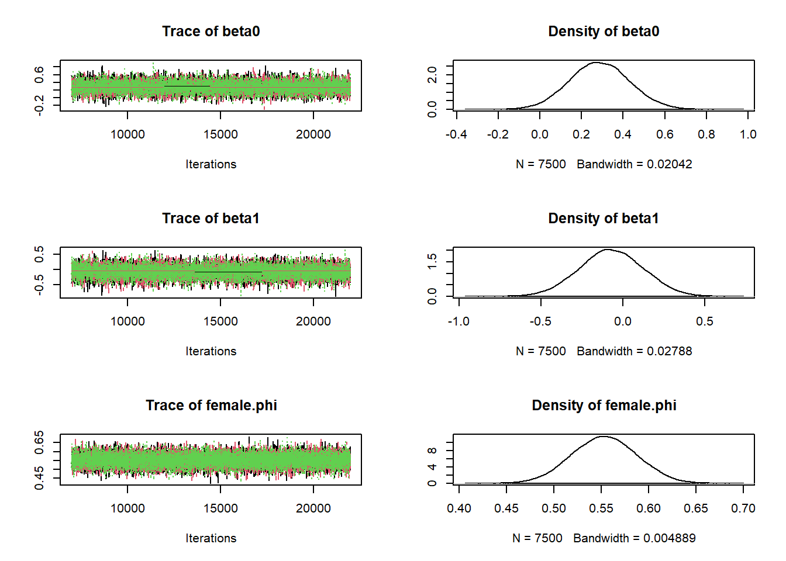

Survival Estimation with Capture-Recapture Data
The Setup
We will estimate the annual survival probability of European Dipper using capture-recapture data via a hierarchical Bayesian version of the cormack-jolly-seber model.
Load the necessary packages.
Next, read in the data. The first column is the capture-history. The second column indicates males (0) and females (1). The third column indicate females (1) and males (0). The fourth column are just semi-colons…it’s MARK thing.
#Load the Data
dipper = read.table("DIPPER.INP", skip = 2,sep="", colClasses = "character")
head(dipper) V1 V2 V3 V4
1 1111110 1 0 ;
2 1111100 0 1 ;
3 1111000 1 0 ;
4 1111000 0 1 ;
5 1101110 0 1 ;
6 1100000 1 0 ;#The number of individuals marked
nrow(dipper)[1] 294Next, lets manipulate the inputted data to create capture-histories in columns, which we will use to fit our model.
# split column 1 into columns
CH = matrix(as.integer(str_split_fixed(dipper[,1],"",7)),nrow=nrow(dipper))
head(CH) [,1] [,2] [,3] [,4] [,5] [,6] [,7]
[1,] 1 1 1 1 1 1 0
[2,] 1 1 1 1 1 0 0
[3,] 1 1 1 1 0 0 0
[4,] 1 1 1 1 0 0 0
[5,] 1 1 0 1 1 1 0
[6,] 1 1 0 0 0 0 0# Sex variable: female = 1; male = 0
sex = as.integer(dipper$V3)We can see that there are 7 columns in the capture-history, 1 for each year. So, this study has 7 years of data total.
Next, we need to setup two specialized functions. ‘get.first’ will identify the first occasion each individual was initially captured. The next function will use the capture history to create logical designations of when we know individuals are alive to be used to initialize the state parameter z.
Lab Assignment
Step 1
Fit a CJS survival model that includes a sex effect on survival probability. Adapt the jags model code in the other file and implementation code that is above.
# MCMC settings
ni <- 15000 # number of iterations
nt <- 2 # number of iterations to thin by
nb <- 5000 # number of iterations to burn (to toss out initially)
na <- 2000 # number of iterations to use to adapt to sample efficiently
nc <- 3 # number of chains
# Parameters monitored
parameters <- c("beta0","beta1", "p")
inits <- function(){list(beta0 = rnorm(1),
beta1 = rnorm(1),
p = runif(1, 0, 1),
z = z.init)}
# Bundle data
jags.data <- list(y = CH, f = f, nind = dim(CH)[1], n.occasions = dim(CH)[2],
sex=sex)
# Setup the Model
jm <- jags.model(file="cjs2.r", data=jags.data,n.chains=nc,n.adapt=na,inits=inits)Compiling model graph
Resolving undeclared variables
Allocating nodes
Graph information:
Observed stochastic nodes: 848
Unobserved stochastic nodes: 851
Total graph size: 4950
Initializing model# Update the model with the burnin
update(jm, n.iter=nb)
#Fit the model
post2 <- coda.samples(jm, variable.names=parameters, n.iter=ni, thin=nt)
#Look at the results
summary(post2)
Iterations = 7002:22000
Thinning interval = 2
Number of chains = 3
Sample size per chain = 7500
1. Empirical mean and standard deviation for each variable,
plus standard error of the mean:
Mean SD Naive SE Time-series SE
beta0 0.28613 0.14316 0.0009544 0.0015897
beta1 -0.07281 0.19453 0.0012969 0.0020880
p 0.89578 0.02908 0.0001939 0.0003323
2. Quantiles for each variable:
2.5% 25% 50% 75% 97.5%
beta0 0.00734 0.1881 0.28634 0.38261 0.5700
beta1 -0.45277 -0.2024 -0.07386 0.05708 0.3125
p 0.83343 0.8776 0.89804 0.91661 0.9454The summary output shows us the quantiles of each model paramter that was defined in the variable parameters.
Step 2
Check that parameters have converged. Show evidence of this by plotting and calculating the gelman-rubin convergence diagnostic, i.e, function gelman.diag.
plot(post2)
gelman.diag(post2)Potential scale reduction factors:
Point est. Upper C.I.
beta0 1 1
beta1 1 1
p 1 1
Multivariate psrf
1We see the diagnostic statistic (gelman-rubin statistics; known as \(\hat{R}\)) are at 1, indicating no sign of lack of convergence. Also, the posterior distribution traceplots look like fuzzy caterpillars and are overlapping, also demonstrating no signs of convergence issues.
Step 3
Use the estimated posterior parameters of survival to derive the posterior distributions for the probability of survival for males and females. Visualize these distributions on the same plot.
beta0 = post2[[1]][,1]
beta1 = post2[[1]][,2]
# Posteriors of survival of males and females
male.survival = plogis(beta0+beta1)
female.survival = plogis(beta0)
# Plot posteriors
plot(density(male.survival),lwd=3,col=1,"Annual Survival")
lines(density(female.survival),lwd=3,col=2)
legend("topright",lwd=3,col=c(1,2),legend=c("Male","Female"))Here we see the posterior distributions of male and female annual survival. They are similar, indicating only a possible small differences in survival between the sexes.
Step 4
Use Monte Carlo integration on the sex effect parameter to estimate the probability that the the effect difference of male survival is less than female survival
# The probability of a sex effect- that male survival is less than female survival
# To evaluate this, we want to know if beta1 is negative
length(which(beta1<0))/length(beta1)[1] 0.6428The probability that \(\beta_1 < 0\) indicates there is no evidence of a difference. A high probability, values near 1, would indicate a stististical clear negative effect. However, if we saw probabilities near 0, this would indicate a clear statistical positive effect difference between male and female survival probability.